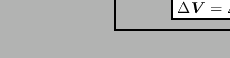

Although the major calculations take place in compfluidfem.c there is one routine
placed at the start of nonlingeo.c to collect topological information, which
is not changed due to the deformation of the structural components (in
fluid-structure interaction calculations). This information includes:
- Storage of all external faces of the mesh (i.e. faces which belong to
only one element) in fields nelemface (element number) and sideface (face
number). The field nelemface is sorted in ascending order. The face number
corresponds to the load face numbering in Section 6.11.2.
- Storage of all solid surface nodes in field isolidsurf in ascending
order. A solid surface node is a node for which all velocity components are
prescribed to be zero. Solid surface nodes belong to external faces of the
mesh. The in-stream neighbor of a solid surface node is stored in field
neighsolidsurf, the distance between both is stored in field xsolidsurf. The
distance is a geometrical entity and is determined in routine initialcfdfem.f.
- Storing all freestream nodes in field ifreestream in ascending order. A
freestream node is a node belonging to an external face which is not a solid
surface node and which does not belong to a cyclic MPC.
- Determining the fluid elements to which a given node belongs and storing
them in field iponoel and inoel. For a given node i one fluid element to
which it belongs is stored in
inoel(1,iponoel(i)). inoel(3,iponoel(i)) is a pointer into field inoel
pointing to another fluid element to which the node belongs. This is
continued until inoel(3,inoel(3,inoel(3.....inoel(3,iponoel(i)))))) is zero.
Figure 186:
Flow diagram for liquids
 |
Figure 187:
Flow diagram for compressible fluids
|